Una clase con nombre propio: Los agentes auto-evolutivos (Gao et al. 2026).
Instancia de calibración: Motor de ejecución agéntica. Aporta cuestionamiento, no evidencia alguna.
| Motor agéntico | Russell & Norvig (2020) | En el modelo |
|---|---|---|
| Programa editable | Plan | Líneas GOTO, PICK, DELIVER |
| Revisarlo contra lo que ve | Monitoreo de ejecución | Divergencia creencia ≠ mundo |
| Reescribirlo | Replanificación | Oráculo: Competencia \(p\), costo \(c\) |
| Editar la ejecución siguiente | Lazo abierto, reinicio en frío | COLD_RESTART (suelta la carga) |
| Editar la ejecución en curso | Lazo cerrado, reparación en caliente | CLOSED_LOOP |
| Lo que tiene a la vista | Observabilidad parcial | Radio de visión \(r\) |
| Pensar mientras todo cambia | Metarazonamiento | DELIBERAR ocupa \(c\) ticks |
El beneficio de replanificar crece con el dinamismo y su costo es casi constante: debería existir un cruce, y nadie lo había medido (Zilberstein 2011; Fox et al. 2006).
MESA 3.5.1 (Kazil et al. 2020): Retícula 15×15, 15 % de obstáculos, 8 recursos, capacidad 3, 400 ticks.
Utilidad neta = 10 × entregas (κ = 0: El único castigo por pensar es el tiempo).
Corrida real de CLOSED_LOOP, λ = 0.25, c = 5, r = 3 (semilla 3).
| Política | Tipo | Cuándo replanifica | |
|---|---|---|---|
| No planifican | |||
| REFLEX | RX | Reflejo simple | Nunca: Va al recurso visible más cercano |
| MODEL_BASED | MB | Reflejo con modelo | Nunca: Va al más cercano según su creencia |
| Planifican con A* y un oráculo | |||
| OPEN_LOOP | OL | Lazo abierto | Solo cuando el plan falla |
| COLD_RESTART | CR | Lazo abierto con reinicio | Al ver la divergencia, en frío (suelta la carga) |
| CLOSED_LOOP | CL | Lazo cerrado, en línea | Al ver la divergencia, en caliente |
| GOVERNED | GOV | Lazo cerrado acotado | Como CL, hasta agotar \(B\) reparaciones |
| Preguntan qué saben antes de pagar | |||
| KNOWLEDGE_BASED | KB | Lógico, con fluentes | Solo si deduce que el plan ya no se cumple |
| BAYESIAN | BAY | Filtro + utilidad esperada | Solo si reparar cuesta menos en esperanza |
Mismo cuerpo, mismo oráculo, misma regla de costo (toda reparación, por fallo o por divergencia, cuesta \(c\)): Lo único que cambia es cuándo se invoca al replanificador.
Con λ = 0.5 y c ≥ 2, MODEL_BASED, que nunca delibera, supera a todo lo que planifica: 98.3 contra 53.3 (c = 2) y 27.0 (c = 5). Con λ = 0 es al revés: 93.3 contra 57.0.
Las curvas son casi rectas desde el tick 50: Las diferencias finales son pendientes acumuladas. A λ = 0.5, CLOSED_LOOP delibera 64 de los primeros 100 ticks: El thrashing es un impuesto constante, no una crisis.
Mueva λ y c y mire quién entrega más. Son corridas reales del modelo, precalculadas: Nada se inventa en el navegador.
TELL de fluentes, \(\mathit{Visto}(r,c,t)\) y \(\neg\mathit{En}(r,c,t)\), más el axioma de deriva:
\(\mathit{En}(r,c,t) \Rightarrow \bigvee_{c'\in N^{+}(c)} \mathit{En}(r,c',t{+}1)\)
Región posible: \(R(r,t) = E^{\delta_t}\bigl(R(r,t{-}1)\bigr) \setminus V_t\).
ASK antes de pagar una reparación:
Diagrama de fiabilidad: El filtro está calibrado (HB5).
λ = 0.5, r = 3, c = 5: CL = CLOSED_LOOP, KB = KNOWLEDGE_BASED, BAY = BAYESIAN (medias por corrida ± EE).
Hipótesis refutada en los dos regímenes: CLOSED_LOOP − OPEN_LOOP pasa de +36.7 ± 4.0 a +62.0 ± 5.0, y MODEL_BASED − OPEN_LOOP de +13.0 ± 3.1 a +96.0 ± 13.0, de 2 a 16 recursos. Costo de oportunidad: Con objetivos de sobra, cada tick quieto es una entrega que no se hace.
λ explica hasta el 62 % de la varianza de las políticas con plan; p a lo sumo el 1.5 % y B el 0.3 %. Sobre OPEN_LOOP − CLOSED_LOOP ningún factor pasa de 0.093: Casi toda su variación es ruido entre mundos.
Despliegue con (λ*, p*) = (0.25, 0.7).
Telemetría de un motor OPEN_LOOP (cinco tasas por tick) → ABC por rechazo (Beaumont et al. 2002) → leer la frontera: ¿planificar? y, si sí, ¿abierto o cerrado?
| (λ*, p*) | λ̂ [IC 90 %] | Recomendación |
|---|---|---|
| (0.1, 0.9) | 0.06 [0.01, 0.14] | Planificar (CL 81 %) |
| (0.25, 0.7) | 0.25 [0.15, 0.40] | No planificar (MB 87 %) |
| (0.5, 0.9) | 0.45 [0.29, 0.74] | No planificar (MB 100 %) |
λ cae siempre dentro del IC 90 %; p no es identificable (la posterior es la previa). Por suerte, la decisión depende de λ.
| Hipótesis del Avance 2 | Veredicto |
|---|---|
| 1. r finito hunde al cerrado | A medias |
| 2. Existe una p mínima | No (η² ≤ 0.015) |
| 3. Caliente > frío | Sí, desde λ = 0.1 |
| 4. B corta el thrashing | Solo evita el peor caso |
| 5. Barrido completo | Hecho, salvo κ |
La hipótesis confirmada con más fuerza: Caliente contra frío, de +16 a +22 puntos desde λ = 0.1.
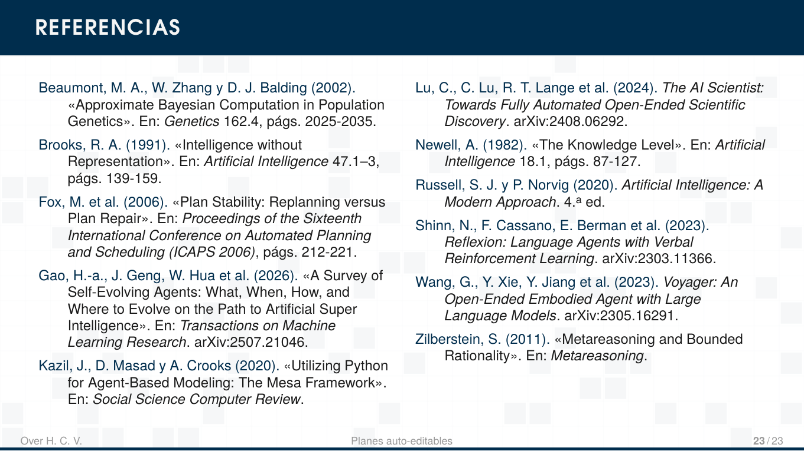
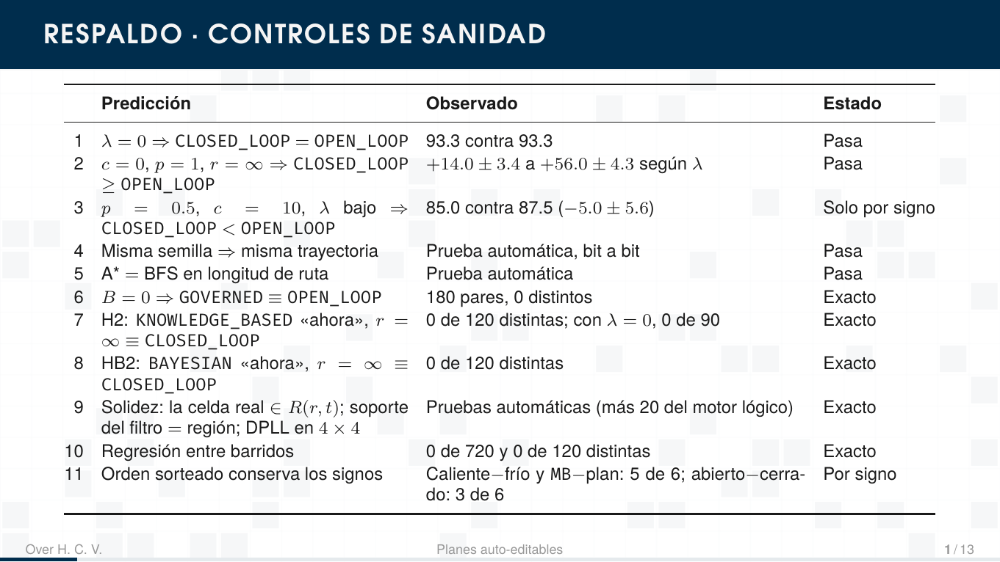
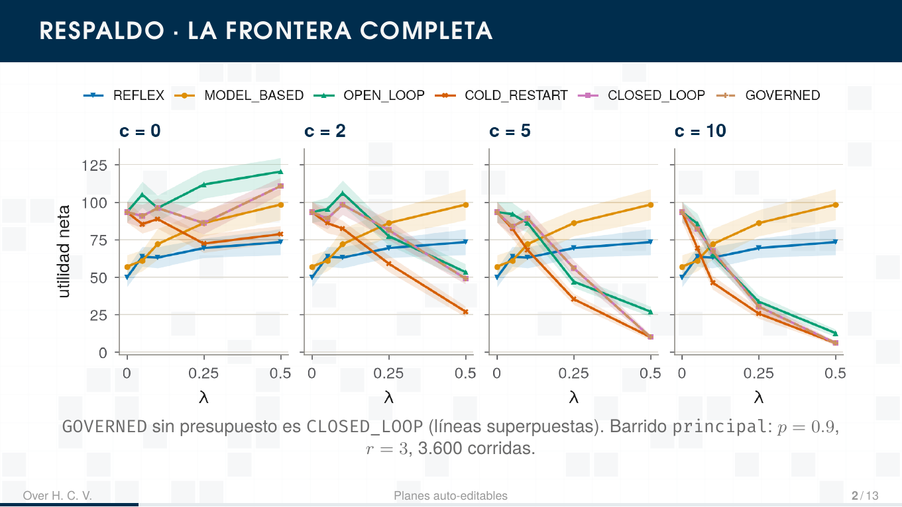
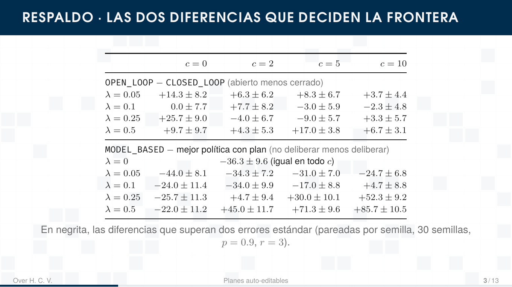
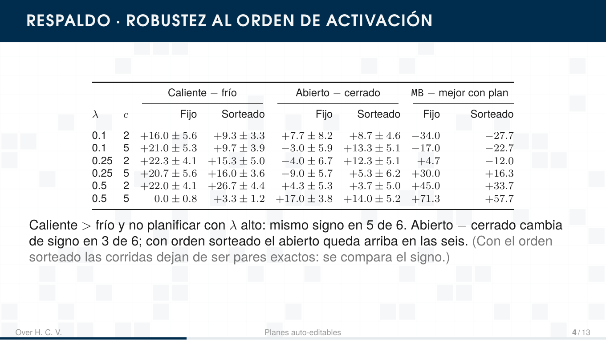
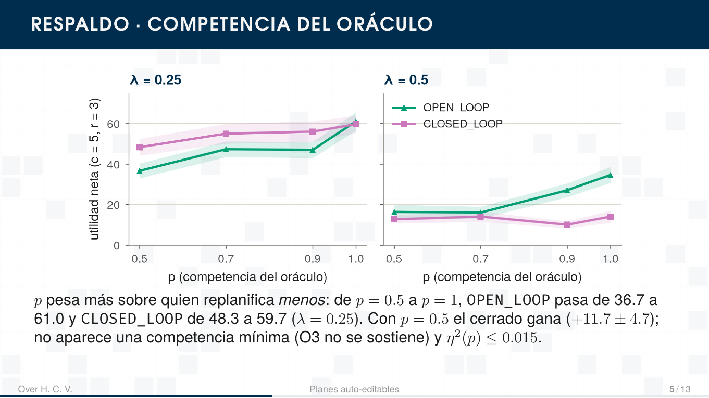
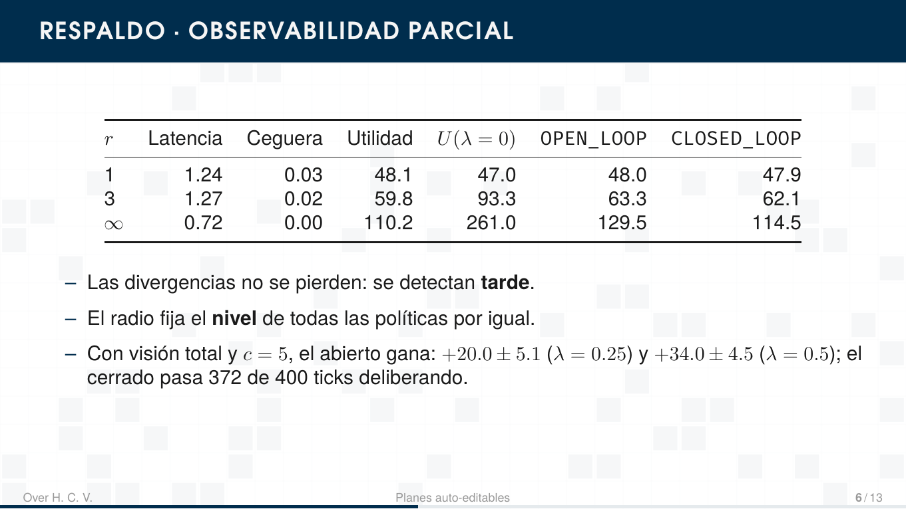
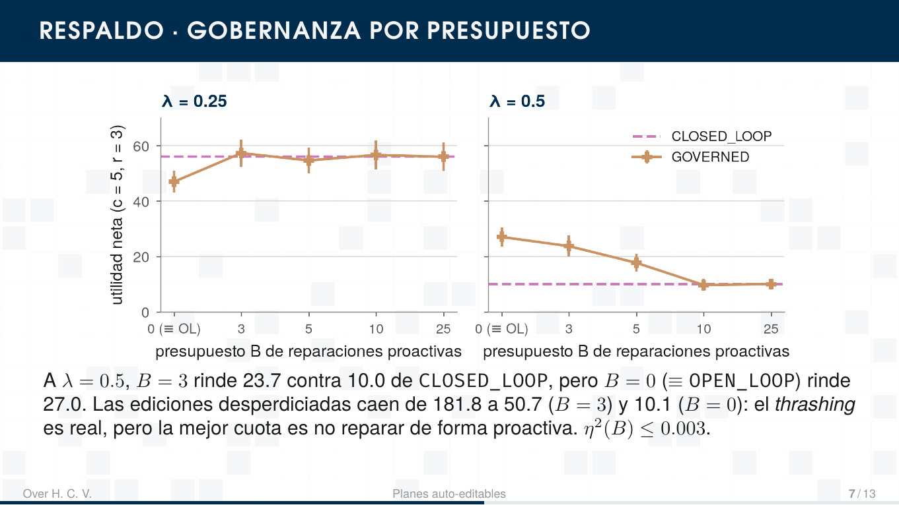
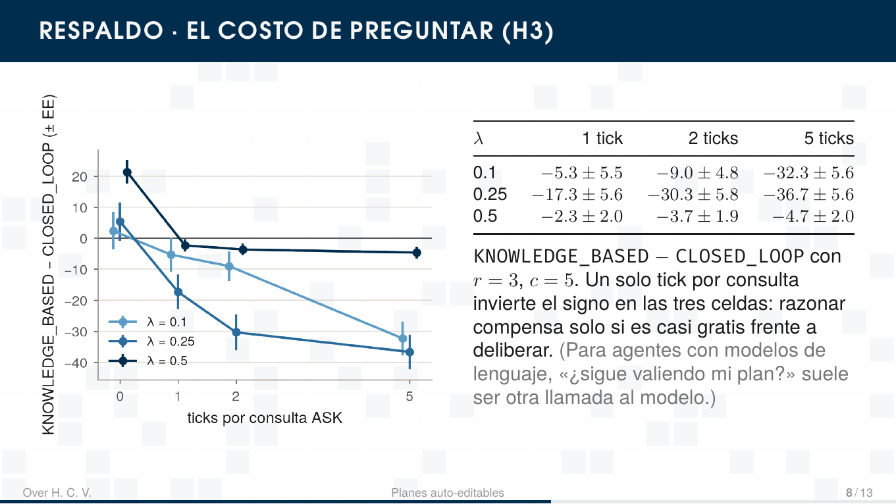
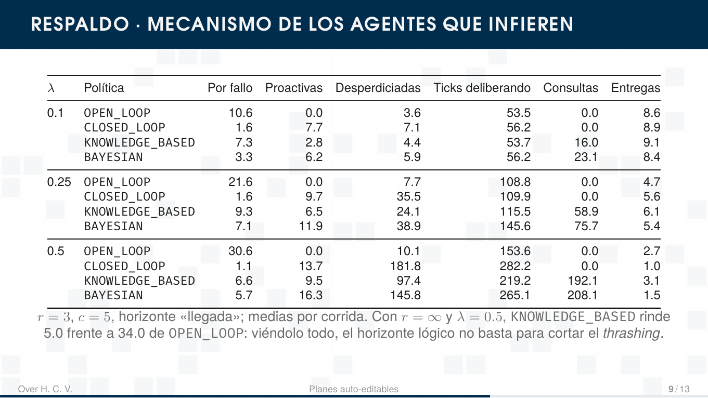
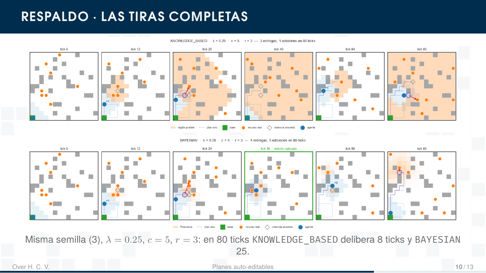
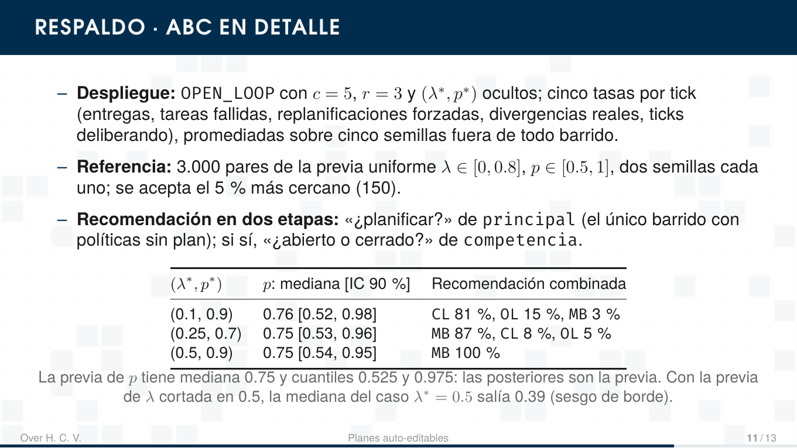
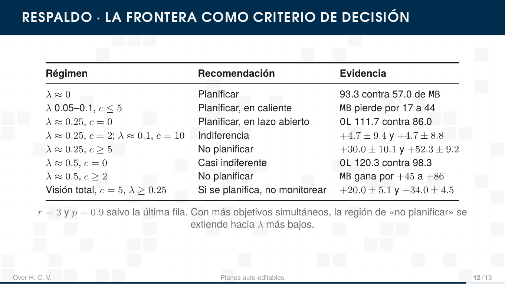
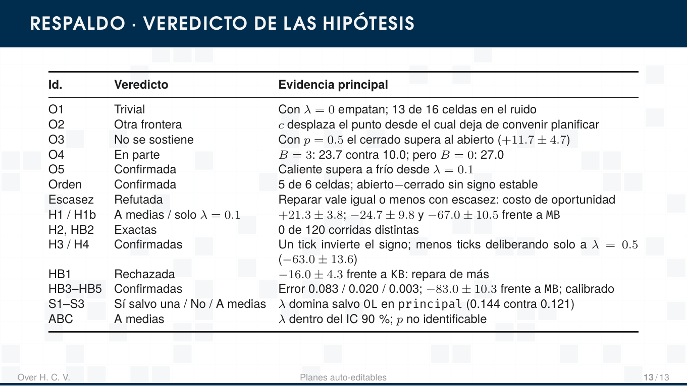
Escanee con el celular. Toque la mitad derecha para avanzar y la izquierda para retroceder.
Q cierra este panel. Solo se ve en esta pantalla.